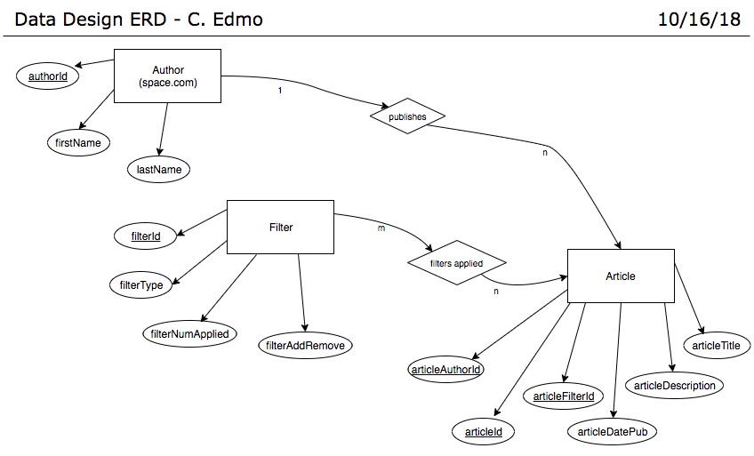

Data Design Project
User Persona
- Name:
John Stockman
- Age:
30
- Sex:
Male
- Ethnicity:
White
- Occupation:
Mid-level Mechanical Engineer at Boeing/Space Hobbiest
- Technology:
iPhone 7 Plus, Apple airpods,
ASUS K52JR (15 inch, 2010) Intel Core i5 M430 2.27GHz
4GB RAM AMD Radeon HD 5470 500GB (bought it in college)
- Attitude:
Uses phone for social apps. Doesn't see a reason to upgrade personal
laptop because he's managed to fix everything so far...kinda. Loves space and MATLAB.
Hopes to one day be Elon Musk, but will settle for working for him too.
- Frustrations:
No mobile app option (laptop is slow to load dynamic content)
No way to customize content to his preferences (only reads SpaceX articles)
User Story
John Stockman would like to mainly see SpaceX content.
Use Case
- Case: Facebook-ing a technical article of recent SpaceX launch via laptop.
- Description: Johnny Boy wants to quickly see a credible and technical
article about how yesterday's launch went.
- Name of user and user role: John, SpaceX superfan, avid article reader.
- Usage preconditions: Laptop must still be working, and be connected to internet.
- Useage postconditions:
- Interaction flow:
- John enters space.com in his web browser.
- The server returns today's Space.com main page.
- John clicks the spaceflight tab at the top of the page.
- Server returns today's page with today's spaceflight news.
- John filters results to find all articles that have been written about SpaceX.
- Server reloads page with new filter constraint.
- John clicks link for most recent article about Falcon launch.
- Server loads link in new page.
- John reads article.
- Server loads a popup window to prompt John to log into facebook and create/edit new post.
- John signs into facebook and writes his most professional opinion about the current state
of for profit space travel. Then clicks 'post'.
- Server posts article and John's opinion to facebook profile. Thank you, John.
- Frequency of use: EVERY.SINGLE.DAY.
Conceptual Model
Entities and Attributes:
Author
- authorId (primary)
- firstName
- lastName
Search Filter
- filterId (primary)
- filterType
- filterNumberApplied
- filterAddRemove
Article List
- articleId (primary)
- articleFilterId (foreign)
- articleAuthorId (foreign)
- articleDatePublished
- articleDescription
- articleTitle
Relations
- Space.com is the only one that can post content to Space.com. (1 to n)
- Many users can apply many filters to article searches. (m to n)
Entity Relationship Diagram
